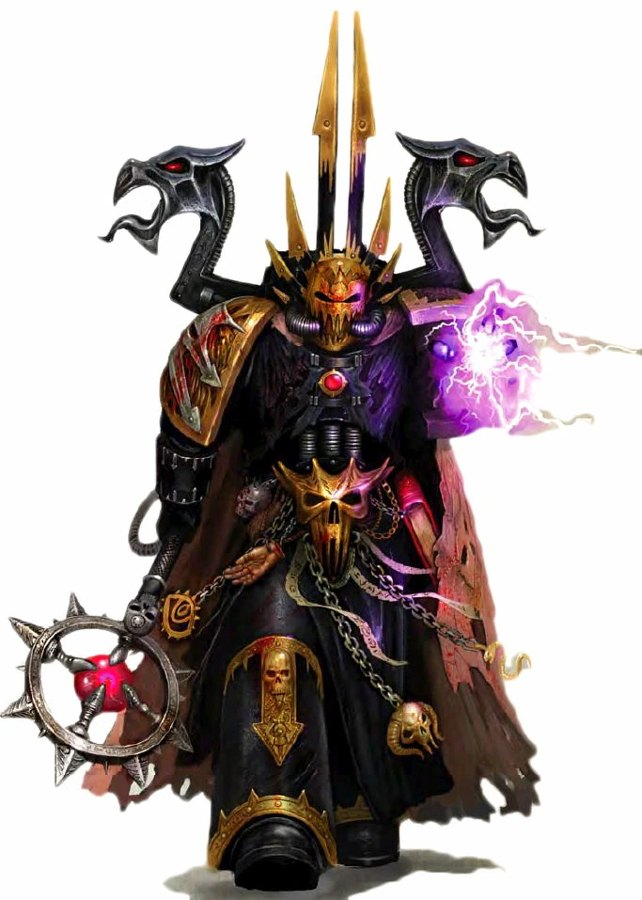
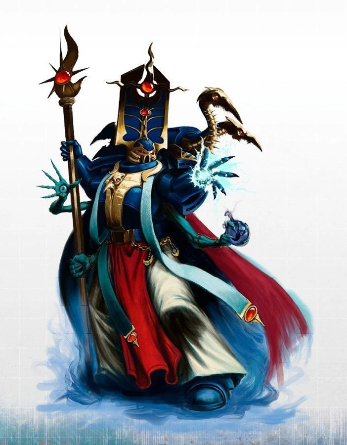

Chaos Sorcerer
| Chaos Sorcerer | |
|---|---|
 A Black Legion sorcerer Artwork © Games Workshop | |
| Allegiance | Chaos |
| Type | Psyker and pact-maker |
| Origin | The Thousand Sons Legion, early Great Crusade |
| Imperial counterpart | Librarian |
| Patron | Most often Tzeentch; also Nurgle and Slaanesh; never Khorne |
| Higher rank | Exalted Sorcerer; then Daemon Prince |
| Fate if unchecked | Mutation into a Chaos Spawn |
A Chaos Sorcerer, or sorcerer, is the most powerful kind of psyker among the Chaos Space Marines and the other mortal forces of Chaos. Sorcerers fill the role that Librarians fill in the loyalist Chapters, but where a Librarian draws on his own mind, a sorcerer makes pacts with the Daemons of the Warp and takes power from them in return for service.[1]
Their powers are destruction, plague and mutation, not the subtle foresight of the Farseers of the Aeldari. They are haunted by the chance of falling to mutation or madness, and in truth are pawns that the Dark Gods raise and discard.[1]
Origins
[edit]Psychic ability appeared in many Legionaries during the early Great Crusade, and most often in the Thousand Sons. The Emperor of Mankind tolerated it, but feared its use by anyone other than himself and Malcador the Sigillite. Magnus the Red urged the creation of a Librarius in each Legion. The Thousand Sons used sorcery to hold whole populations in thrall instead of fighting for them, which angered Leman Russ and drew complaints from the Death Guard, Imperial Fists and Raven Guard.[2]
At the Council of Nikaea in 001.M31, the existence of psykers under Imperial control was allowed. Sorcery, meaning any use of power that required dealing with beings of the Warp, was banned, and the Emperor forbade Magnus and his Legion to use it. They studied it in secret on Prospero, and their fall into damnation led to the Burning of Prospero by the Space Wolves.[2]
In the Horus Heresy the Librarians of the Legions that turned traitor gained new powers. The exception was the World Eaters, whose Librarians were hunted down and slain as an offering to Khorne, who hates sorcery as dishonourable.[1]
Path of the sorcerer
[edit]The line between psychic power and sorcery is fine. A Librarian who overreaches in battle may feel a forbidden thrill, hear whispers in dreams and see visions of immortality. Those who accept the offers become sorcerers. Even a person with no psychic gift can become one by learning Warp lore, but the process is dangerous to body and soul.[1]
Sorcerers seek out every kind of forbidden knowledge, including xenos lore, because any datum might persuade a patron to empower them further. Most belong to a warband and are rarely willing to take orders from its Chaos Champion. Many warbands have split when a sorcerer led part of the band away, and some Chaos Lords have been killed by the advisors they kept.[3]
Some sorcerers are ambitious strategists. Ygethmor the Deceiver is said to have run a doomsday cult that emptied every inhabited world of the Corriallis System.[1]
Thousand Sons sorcerers
[edit]Sorcerers lead the thrallbands of the Thousand Sons. They command the ranks of Rubricae, and drive cultists and Tzaangors on the enemy while they call up Tzeentch's Daemons. Most are recruited as "Aspiring Sorcerers" from psykers of Tzeentchian cults and taken to Tizca on the Planet of the Sorcerers. Many go mad or die in the transformation, and the few survivors are reborn as witch-warriors of the Legion.[4]
A sorcerer of exceptional power is an Exalted Sorcerer. Some of these are exiles of Prospero who spoke the Rubric ten thousand years ago. Exalted Sorcerers are warlords and warrior-mystics, often mutated, and are favoured by Tzeentch only while they keep winning. Their ambition is to become a Daemon Prince.[4]

Many ancient sorcerers of the Thousand Sons now serve Abaddon the Despoiler, and add their Rubricae bodyguards to the Black Legion.[1]
Disciplines
[edit]Sorcerers cast bolts of Warp energy, curse enemies with plague, raise the dead, and reshape living flesh. Most bear the mark of Tzeentch, god of sorcery, and some bear that of Nurgle or Slaanesh, each with its own discipline of power.[5] Their weapons are artefacts soaked in Chaos that can tear a soul from the body.[1]
Timeline
[edit]| Date | Event |
|---|---|
| Early Great Crusade (estimated) | Psychic Legionaries multiply in the Thousand Sons; Librarius corps created |
| 001.M31 | Council of Nikaea bans sorcery |
| Horus Heresy | Traitor Librarians gain new powers; World Eaters kill theirs |
| M31 onward | Sorcerers of the Thousand Sons and other warbands serve in the Long War |
See also
[edit]References
[edit]- ^ a b c d e f g Codex Heretic Astartes: Chaos Space Marines (8th edition). Games Workshop. pp. 59, 125, 161.
- ^ a b Index Astartes III, "Masters of Forbidden Knowledge: The Thousand Sons Space Marine Legion". Games Workshop. pp. 62-69.
- ^ Black Crusade: Core Rulebook (roleplaying game). Fantasy Flight Games. pp. 60-61.
- ^ a b Codex Heretic Astartes: Thousand Sons (8th edition). Games Workshop. pp. 36, 38, 69-71.
- ^ Black Crusade: The Tome of Fate (roleplaying game). Fantasy Flight Games. pp. 22, 30-31, 34-35, 38, 40.